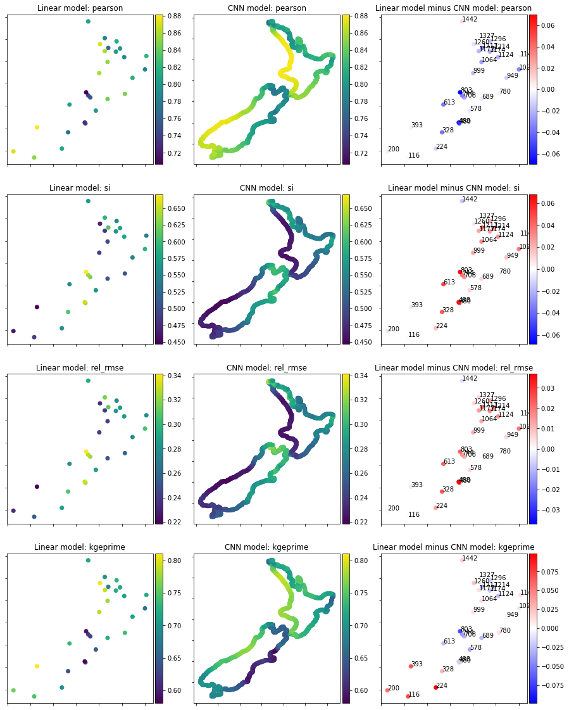

Contents
# basics
import os, sys
# arrays
import numpy as np
import pandas as pd
import xarray as xr
from datetime import (
datetime,
timedelta
)
# plotting
import matplotlib.pyplot as plt
import cartopy.crs as ccrs
# append sscode to path
sys.path.insert(0, '/home/metocean/geocean-nz-ss')
data_path = '/data' #'/data/storm_surge_data/'
os.environ["SSURGE_DATA_PATH"] = data_path
# custom
from sscode.config import data_path, default_region_reduced, default_evaluation_metrics, default_region
from sscode.utils import (
calculate_relative_winds,
spatial_gradient
)
# warnings
import warnings
warnings.filterwarnings('ignore')
# this is to allow plots to be centered
from IPython.core.display import HTML
HTML("""
<style>
.output_png {
display: table-cell;
text-align: center;
vertical-align: middle;
}
</style>
""")
%matplotlib inline
DATA PATH /data
# dataset attrs
datasets_attrs = {
'era5': ('longitude','latitude',None,'ERA 5 reanalysis','u10','v10'),
#'cfsr': ('lon','lat',None,'CFSR reanalysis','U_GRD_L103','V_GRD_L103'),
'cfsr': ('longitude','latitude',None,'CFSR reanalysis','ugrd10m','vgrd10m'),
'dac': ('longitude','latitude',None,'DAC global reanalysis'),
'moana': ('lon','lat','site','Moana v2 hindcast'),
'codec': ('codec_coords_lon','codec_coords_lat','name','CoDEC reanalysis'),
'uhslc': ('longitude','latitude','name','UHSLC tgs'),
'linz': ('longitude','latitude','name','LINZ tgs'),
'other': ('longitude','latitude','name','OTHER tgs'),
'privtgs': ('longitude','latitude','name','Private tgs')
}
First we load the storm surge data for mainland New Zealand only (excluding Chatham and Auckland Islands). We will work with the daily maxima. And to each time stamp, we associate the the maximum storm surge for the following 24 hours.
ss_dset = xr.open_zarr(os.path.join(data_path, 'storm_surge_data/moana_hindcast_v2/moana_coast.zarr/'))
ss_dset = ss_dset.isel(site=np.logical_and(ss_dset.lat>-50, ss_dset.lon < 180))
predictand = ss_dset.ss\
.sel(time=slice(datetime(1994,12,1), datetime(2017,2,1,1)))\
.drop_duplicates('time')\
.chunk(dict(time=-1))\
.interpolate_na(dim='time')\
.transpose()\
.load()
def get_best_predictor_for_region(region=None,
normalised=True):
from sscode.utils import spatial_gradient
from sscode.config import default_region_reduced
pres_vars = ('SLP','longitude','latitude')
wind_vars = ('wind_proj_mask','longitude','latitude','U_GRD_L103','V_GRD_L103')
if region is None:
region = default_region_reduced
region_large = ( # Pad to be able to do interpolation
region[0]-1,
region[1]+1,
region[2]-1,
region[3]+1
)
print("Loading MSLP")
pres = xr.open_dataarray(os.path.join(data_path, 'cfsr',
'CFSR_MSLP_1H_1990_2021.nc'))\
.sel(time=slice(datetime(1994,11,1), datetime(2017,3,1)))\
.sel({
pres_vars[1]:slice(region[0],region[1]),
pres_vars[2]:slice(region[2],region[3])
})\
.sortby('longitude',ascending=True)\
.sortby('latitude',ascending=True).fillna(0.0)
print("Done")
print("Loading wind")
wind = xr.open_dataset(os.path.join(data_path, 'cfsr',
'wnd10m/cfsr_wnd_1979_2021.nc'))[[datasets_attrs['cfsr'][4],
datasets_attrs['cfsr'][5]]]\
.rename({
datasets_attrs['cfsr'][4]: 'u10m',
datasets_attrs['cfsr'][5]: 'v10m'
})\
.sel(time=slice(datetime(1994,11,1), datetime(2017,3,1)))\
.sel({
wind_vars[1]:slice(region_large[0],region_large[1]),
wind_vars[2]:slice(region_large[2],region_large[3])
})\
.sortby(datasets_attrs['cfsr'][0],ascending=True)\
.sortby(datasets_attrs['cfsr'][1],ascending=True)\
.fillna(0.0)\
.interp(coords={wind_vars[1]:pres[pres_vars[1]],
wind_vars[2]:pres[pres_vars[2]]})\
.sel(time=pres.time) # interp to pressure coords
print("Done")
# calculate the gradient
print('\n calculating the gradient of the sea-level-pressure fields... \n')
pres = spatial_gradient(pres,pres_vars[0]) # from utils.py
print('\n pressure/gradient predictor both with shape: \n {} \n'\
.format(pres[pres_vars[0]].shape))
if normalised:
all_predictors =\
xr.concat([
(pres.SLP.expand_dims("channel", -1)-pres.SLP.min())/(pres.SLP.max()-pres.SLP.min()),
(pres.SLP_gradient.expand_dims("channel", -1)-pres.SLP_gradient.min())/(pres.SLP_gradient.max()-pres.SLP.min()),
(wind.u10m.expand_dims("channel", -1)-wind.u10m.min())/(wind.u10m.max()-wind.u10m.min()),
(wind.v10m.expand_dims("channel", -1)-wind.v10m.min())/(wind.v10m.max()-wind.v10m.min())
],
"channel").fillna(0)
else:
all_predictors = \
xr.concat([
pres.SLP.expand_dims("channel", -1),
pres.SLP_gradient.expand_dims("channel", -1),
wind.u10m.expand_dims("channel", -1),
wind.v10m.expand_dims("channel", -1)
],
"channel").fillna(0)
return all_predictors
all_predictors = get_best_predictor_for_region()
Loading MSLP
Done
Loading wind
Done
calculating the gradient of the sea-level-pressure fields...
pressure/gradient predictor both with shape:
(195745, 45, 51)
fig, axes = plt.subplots(figsize=(6,5))
all_predictors.isel(time=0,channel=2).plot(ax=axes)
axes.scatter(ss_dset.lon.values, ss_dset.lat.values, color='black')
axes.set_xlim(xmin=default_region[0]-1, xmax=default_region[1]+1)
axes.set_ylim(ymin=default_region[2]-1, ymax=default_region[3]+1)
(-71.0, -19.0)
import tensorflow.compat.v2 as tfv2
# pylint: disable=g-classes-have-attributes
# These functions are adapted from
# https://github.com/keras-team/keras/blob/06ba37b8662dea768b3bc8201942f1eb877708e8/keras/preprocessing/timeseries.py
# The main addition is that they targets have been modified to contain both the input grid and the ss output
# That way it is possible to use the dataset to train both heads of the network
def sequences_from_indices(array, indices_ds, start_index, end_index):
dataset = tfv2.data.Dataset.from_tensors(array[start_index : end_index])
dataset = tfv2.data.Dataset.zip((dataset.repeat(), indices_ds)).map(
lambda steps, inds: tfv2.gather(steps, inds), # pylint: disable=unnecessary-lambda
num_parallel_calls=tfv2.data.AUTOTUNE)
return dataset
def timeseries_dataset_from_array_seb(
data,
targets,
targets_2,
sequence_length,
weights=None,
sequence_stride=1,
sampling_rate=1,
batch_size=128,
shuffle=False,
seed=None,
start_index=None,
end_index=None):
"""Creates a dataset of sliding windows over a timeseries provided as array.
This function takes in a sequence of data-points gathered at
equal intervals, along with time series parameters such as
length of the sequences/windows, spacing between two sequence/windows, etc.,
to produce batches of timeseries inputs and targets.
Args:
data: Numpy array or eager tensor
containing consecutive data points (timesteps).
Axis 0 is expected to be the time dimension.
targets: Targets corresponding to timesteps in `data`.
`targets[i]` should be the target
corresponding to the window that starts at index `i`
(see example 2 below).
Pass None if you don't have target data (in this case the dataset will
only yield the input data).
sequence_length: Length of the output sequences (in number of timesteps).
sequence_stride: Period between successive output sequences.
For stride `s`, output samples would
start at index `data[i]`, `data[i + s]`, `data[i + 2 * s]`, etc.
sampling_rate: Period between successive individual timesteps
within sequences. For rate `r`, timesteps
`data[i], data[i + r], ... data[i + sequence_length]`
are used for create a sample sequence.
batch_size: Number of timeseries samples in each batch
(except maybe the last one).
shuffle: Whether to shuffle output samples,
or instead draw them in chronological order.
seed: Optional int; random seed for shuffling.
start_index: Optional int; data points earlier (exclusive)
than `start_index` will not be used
in the output sequences. This is useful to reserve part of the
data for test or validation.
end_index: Optional int; data points later (exclusive) than `end_index`
will not be used in the output sequences.
This is useful to reserve part of the data for test or validation.
Returns:
A tfv2.data.Dataset instance. If `targets` was passed, the dataset yields
tuple `(batch_of_sequences, batch_of_targets)`. If not, the dataset yields
only `batch_of_sequences`.
Example 1:
Consider indices `[0, 1, ... 99]`.
With `sequence_length=10, sampling_rate=2, sequence_stride=3`,
`shuffle=False`, the dataset will yield batches of sequences
composed of the following indices:
```
First sequence: [0 2 4 6 8 10 12 14 16 18]
Second sequence: [3 5 7 9 11 13 15 17 19 21]
Third sequence: [6 8 10 12 14 16 18 20 22 24]
...
Last sequence: [78 80 82 84 86 88 90 92 94 96]
```
In this case the last 3 data points are discarded since no full sequence
can be generated to include them (the next sequence would have started
at index 81, and thus its last step would have gone over 99).
Example 2: Temporal regression.
Consider an array `data` of scalar values, of shape `(steps,)`.
To generate a dataset that uses the past 10
timesteps to predict the next timestep, you would use:
```python
input_data = data[:-10]
targets = data[10:]
dataset = tfv2.keras.preprocessing.timeseries_dataset_from_array(
input_data, targets, sequence_length=10)
for batch in dataset:
inputs, targets = batch
assert np.array_equal(inputs[0], data[:10]) # First sequence: steps [0-9]
assert np.array_equal(targets[0], data[10]) # Corresponding target: step 10
break
```
Example 3: Temporal regression for many-to-many architectures.
Consider two arrays of scalar values `X` and `Y`,
both of shape `(100,)`. The resulting dataset should consist samples with
20 timestamps each. The samples should not overlap.
To generate a dataset that uses the current timestamp
to predict the corresponding target timestep, you would use:
```python
X = np.arange(100)
Y = X*2
sample_length = 20
input_dataset = tfv2.keras.preprocessing.timeseries_dataset_from_array(
X, None, sequence_length=sample_length, sequence_stride=sample_length)
target_dataset = tfv2.keras.preprocessing.timeseries_dataset_from_array(
Y, None, sequence_length=sample_length, sequence_stride=sample_length)
for batch in zip(input_dataset, target_dataset):
inputs, targets = batch
assert np.array_equal(inputs[0], X[:sample_length])
# second sample equals output timestamps 20-40
assert np.array_equal(targets[1], Y[sample_length:2*sample_length])
break
```
"""
if start_index:
if start_index < 0:
raise ValueError(f'`start_index` must be 0 or greater. Received: '
f'start_index={start_index}')
if start_index >= len(data):
raise ValueError(f'`start_index` must be lower than the length of the '
f'data. Received: start_index={start_index}, for data '
f'of length {len(data)}')
if end_index:
if start_index and end_index <= start_index:
raise ValueError(f'`end_index` must be higher than `start_index`. '
f'Received: start_index={start_index}, and '
f'end_index={end_index} ')
if end_index >= len(data):
raise ValueError(f'`end_index` must be lower than the length of the '
f'data. Received: end_index={end_index}, for data of '
f'length {len(data)}')
if end_index <= 0:
raise ValueError('`end_index` must be higher than 0. '
f'Received: end_index={end_index}')
# Validate strides
if sampling_rate <= 0:
raise ValueError(f'`sampling_rate` must be higher than 0. Received: '
f'sampling_rate={sampling_rate}')
if sampling_rate >= len(data):
raise ValueError(f'`sampling_rate` must be lower than the length of the '
f'data. Received: sampling_rate={sampling_rate}, for data '
f'of length {len(data)}')
if sequence_stride <= 0:
raise ValueError(f'`sequence_stride` must be higher than 0. Received: '
f'sequence_stride={sequence_stride}')
if sequence_stride >= len(data):
raise ValueError(f'`sequence_stride` must be lower than the length of the '
f'data. Received: sequence_stride={sequence_stride}, for '
f'data of length {len(data)}')
if start_index is None:
start_index = 0
if end_index is None:
end_index = len(data)
# Determine the lowest dtype to store start positions (to lower memory usage).
num_seqs = end_index - start_index - (sequence_length * sampling_rate) + 1
if targets is not None:
num_seqs = min(num_seqs, len(targets))
if num_seqs < 2147483647:
index_dtype = 'int32'
else:
index_dtype = 'int64'
# Generate start positions
start_positions = np.arange(0, num_seqs, sequence_stride, dtype=index_dtype)
if shuffle:
if seed is None:
seed = np.random.randint(1e6)
rng = np.random.RandomState(seed)
rng.shuffle(start_positions)
sequence_length = tfv2.cast(sequence_length, dtype=index_dtype)
sampling_rate = tfv2.cast(sampling_rate, dtype=index_dtype)
positions_ds = tfv2.data.Dataset.from_tensors(start_positions).repeat()
# For each initial window position, generates indices of the window elements
indices = tfv2.data.Dataset.zip(
(tfv2.data.Dataset.range(len(start_positions)), positions_ds)).map(
lambda i, positions: tfv2.range( # pylint: disable=g-long-lambda
positions[i],
positions[i] + sequence_length * sampling_rate,
sampling_rate),
num_parallel_calls=tfv2.data.AUTOTUNE)
dataset = sequences_from_indices(data, indices, start_index, end_index)
outputs = [dataset]
if targets is not None:
indices = tfv2.data.Dataset.zip(
(tfv2.data.Dataset.range(len(start_positions)), positions_ds)).map(
lambda i, positions: positions[i],
num_parallel_calls=tfv2.data.AUTOTUNE)
print(targets.__class__)
target_ds = sequences_from_indices(
targets, indices, start_index, end_index)
if targets_2 is not None:
target_ds_2 = sequences_from_indices(
targets_2, indices, start_index, end_index)
outputs.append((target_ds, target_ds_2))
else:
#outputs.append((target_ds, dataset))
outputs.append(target_ds)
##dataset = tfv2.data.Dataset.zip((dataset, (target_ds, dataset)))
#outputs.append((target_ds, dataset))
#outputs.append(target_ds)
if weights is not None:
indices = tfv2.data.Dataset.zip(
(tfv2.data.Dataset.range(len(start_positions)), positions_ds)).map(
lambda i, positions: positions[i],
num_parallel_calls=tfv2.data.AUTOTUNE)
print(weights.__class__)
target_weights_dset = sequences_from_indices(
weights, indices, start_index, end_index)
indices = tfv2.data.Dataset.zip(
(tfv2.data.Dataset.range(len(start_positions)), positions_ds)).map(
lambda i, positions: tfv2.range( # pylint: disable=g-long-lambda
positions[i],
positions[i] + sequence_length * sampling_rate,
sampling_rate),
num_parallel_calls=tfv2.data.AUTOTUNE)
ae_weights_dset = sequences_from_indices(np.ones(data.shape[:-1]+(1,)), indices, start_index, end_index)
outputs.append((target_weights_dset, ae_weights_dset))
#dataset = tfv2.data.Dataset.zip((dataset, (target_ds, dataset)))
dataset = tfv2.data.Dataset.zip(tuple(outputs))
if shuffle:
# Shuffle locally at each iteration
dataset = dataset.shuffle(buffer_size=batch_size * 8, seed=seed)
dataset = dataset.prefetch(tfv2.data.AUTOTUNE).batch(batch_size)
return dataset
import tensorflow as tf
to_use=0
gpus = tf.config.list_physical_devices('GPU')
try:
tf.config.set_visible_devices(gpus[to_use], 'GPU')
logical_gpus = tf.config.list_logical_devices('GPU')
print(len(gpus), "Physical GPUs,", len(logical_gpus), "Logical GPU")
except RuntimeError as e:
# Visible devices must be set before GPUs have been initialized
print(e)
except:
# Invalid device or cannot modify virtual devices once initialized.
print("Failed to select GPU")
2 Physical GPUs, 1 Logical GPU
2021-12-16 02:02:14.540113: I tensorflow/stream_executor/cuda/cuda_gpu_executor.cc:937] successful NUMA node read from SysFS had negative value (-1), but there must be at least one NUMA node, so returning NUMA node zero
2021-12-16 02:02:14.541269: I tensorflow/stream_executor/cuda/cuda_gpu_executor.cc:937] successful NUMA node read from SysFS had negative value (-1), but there must be at least one NUMA node, so returning NUMA node zero
2021-12-16 02:02:14.547531: I tensorflow/stream_executor/cuda/cuda_gpu_executor.cc:937] successful NUMA node read from SysFS had negative value (-1), but there must be at least one NUMA node, so returning NUMA node zero
2021-12-16 02:02:14.548346: I tensorflow/stream_executor/cuda/cuda_gpu_executor.cc:937] successful NUMA node read from SysFS had negative value (-1), but there must be at least one NUMA node, so returning NUMA node zero
2021-12-16 02:02:14.548701: I tensorflow/stream_executor/cuda/cuda_gpu_executor.cc:937] successful NUMA node read from SysFS had negative value (-1), but there must be at least one NUMA node, so returning NUMA node zero
2021-12-16 02:02:14.549501: I tensorflow/stream_executor/cuda/cuda_gpu_executor.cc:937] successful NUMA node read from SysFS had negative value (-1), but there must be at least one NUMA node, so returning NUMA node zero
2021-12-16 02:02:14.550514: I tensorflow/core/platform/cpu_feature_guard.cc:142] This TensorFlow binary is optimized with oneAPI Deep Neural Network Library (oneDNN) to use the following CPU instructions in performance-critical operations: AVX2 FMA
To enable them in other operations, rebuild TensorFlow with the appropriate compiler flags.
2021-12-16 02:02:14.551328: I tensorflow/stream_executor/cuda/cuda_gpu_executor.cc:937] successful NUMA node read from SysFS had negative value (-1), but there must be at least one NUMA node, so returning NUMA node zero
2021-12-16 02:02:14.552058: I tensorflow/stream_executor/cuda/cuda_gpu_executor.cc:937] successful NUMA node read from SysFS had negative value (-1), but there must be at least one NUMA node, so returning NUMA node zero
2021-12-16 02:02:14.552797: I tensorflow/stream_executor/cuda/cuda_gpu_executor.cc:937] successful NUMA node read from SysFS had negative value (-1), but there must be at least one NUMA node, so returning NUMA node zero
2021-12-16 02:02:14.909266: I tensorflow/stream_executor/cuda/cuda_gpu_executor.cc:937] successful NUMA node read from SysFS had negative value (-1), but there must be at least one NUMA node, so returning NUMA node zero
2021-12-16 02:02:14.909870: I tensorflow/stream_executor/cuda/cuda_gpu_executor.cc:937] successful NUMA node read from SysFS had negative value (-1), but there must be at least one NUMA node, so returning NUMA node zero
2021-12-16 02:02:14.910422: I tensorflow/stream_executor/cuda/cuda_gpu_executor.cc:937] successful NUMA node read from SysFS had negative value (-1), but there must be at least one NUMA node, so returning NUMA node zero
2021-12-16 02:02:14.910947: I tensorflow/core/common_runtime/gpu/gpu_device.cc:1510] Created device /job:localhost/replica:0/task:0/device:GPU:0 with 22315 MB memory: -> device: 0, name: GeForce RTX 3090, pci bus id: 0000:01:00.0, compute capability: 8.6
def get_training_and_validation_sets(predictors,
predictand,
input_sequence_length,
input_sequence_frequency,
lead_time,
target_sequence_frequency,
fold=0,
n_folds=5,
batch_size=32,
print_test=False):
if ( not (predictand.time.values[1:]-predictand.time.values[:-1]).max() ==\
(predictand.time.values[1:]-predictand.time.values[:-1]).min() ):
print("Time spacing is not constant in predictand dataset")
raise
if ( not (predictors.time.values[1:]-predictors.time.values[:-1]).max() ==\
(predictors.time.values[1:]-predictors.time.values[:-1]).min() ):
print("Time spacing is not constant in predictor dataset")
raise
# Find start, end and extent of dataset
[tstart_predictor, tend_predictor] = predictors.time.values[[0,-1]].astype('datetime64[s]').tolist()
[tstart_predictand, tend_predictand] = predictand.time.values[[0,-1]].astype('datetime64[s]').tolist()
tstart = max(tstart_predictand, tstart_predictor)
tend = min(tend_predictand, tend_predictor)
time_extent = tend - tstart
print("Returning fold ",fold," of ", n_folds, " e.g. %2.1f percent training data"%((n_folds-1)/n_folds*100.))
# Finding time bounds of training data segments
tstart_1 = tstart
tend_1 = (tstart + time_extent*((n_folds-1-fold)/n_folds)).replace(second=0, microsecond=0, minute=0)
tstart_2 = (tstart + time_extent*((n_folds-fold)/n_folds)).replace(second=0, microsecond=0, minute=0)
tend_2 = tend
print("")
train_dset = []
for tstart_train, tend_train in zip([tstart_1, tstart_2],[tend_1, tend_2]):
if tstart_train != tend_train:
print("Adding", tstart_train, tend_train,"to training dataset")
predictor_train =\
predictors.sel(time=slice(tstart_train,
tend_train-timedelta(hours=(lead_time-target_sequence_frequency))))\
.rolling(time=input_sequence_frequency).mean()\
.shift(time=-(input_sequence_frequency-1))\
.isel(time=slice(0,-(input_sequence_frequency-1)))\
.fillna(0)
ss_train = predictand.sel(time=slice(tstart_train+timedelta(hours=input_sequence_length+lead_time-target_sequence_frequency),
tend_train))\
.chunk(dict(time=-1))\
.interpolate_na(dim='time')\
.rolling(time=target_sequence_frequency).max()\
.shift(time=-(target_sequence_frequency-1))\
.isel(time=slice(0,-(target_sequence_frequency-1)))*100
if len(ss_train.dims) == 1:
ss_train = ss_train.expand_dims("channel", -1)
if print_test: # To check indices are fine
test_dset = timeseries_dataset_from_array_seb(
(predictor_train.time.values.astype(np.int)-786412800000000000)//3600000000000,
(ss_train.time.values.astype(np.int)-786412800000000000)//3600000000000,
targets_2=None,
weights=None,
sequence_length=int(input_sequence_length/input_sequence_frequency),
sequence_stride=int(target_sequence_frequency/input_sequence_frequency),
sampling_rate=input_sequence_frequency,
batch_size=4, shuffle=True, seed=None, start_index=None, end_index=None
)
print("All integer correspond to number of hours with respect to reference date")
for batch in test_dset:
inputs, targets = batch
for v1, v2 in zip(inputs, targets):
print("Times in:", v1, "Times out:", v2)
print_test = False
break
print("")
train_dset.append(timeseries_dataset_from_array_seb(
predictor_train,
ss_train,
targets_2=None,
weights=None,
sequence_length=int(input_sequence_length/input_sequence_frequency),
sequence_stride=int(target_sequence_frequency/input_sequence_frequency),
sampling_rate=input_sequence_frequency,
batch_size=batch_size, shuffle=True, seed=None, start_index=None, end_index=None
))
# If multiple segments concatenate them into a single dataset
if len(train_dset) == 1:
train_dset = train_dset[0]
else:
assert len(train_dset) == 2
train_dset = train_dset[0].concatenate(train_dset[1])
# Validation data
print("Adding", tend_1, tstart_2,"to validation dataset")
predictor_val = predictors.sel(time=slice(tend_1,
tstart_2-timedelta(hours=(lead_time-target_sequence_frequency))))\
.rolling(time=input_sequence_frequency).mean()\
.shift(time=-(input_sequence_frequency-1))\
.isel(time=slice(0,-(input_sequence_frequency-1)))\
.fillna(0)
ss_val = predictand.sel(time=slice(tend_1+timedelta(hours=input_sequence_length+lead_time-target_sequence_frequency),
tstart_2))\
.chunk(dict(time=-1))\
.interpolate_na(dim='time')\
.rolling(time=target_sequence_frequency).max()\
.shift(time=-(target_sequence_frequency-1))\
.isel(time=slice(0,-(target_sequence_frequency-1)))*100
if len(ss_val.dims) == 1:
ss_val = ss_val.expand_dims("channel", -1)
val_dset = timeseries_dataset_from_array_seb(
predictor_val,
ss_val,
targets_2=None,
weights=None,
sequence_length=int(input_sequence_length/input_sequence_frequency),
sequence_stride=int(target_sequence_frequency/input_sequence_frequency),
sampling_rate=input_sequence_frequency,
batch_size=batch_size, shuffle=False, seed=None, start_index=None, end_index=None
)
return train_dset, val_dset
from tensorflow.keras.layers import (
Conv2D,
Conv3D,
BatchNormalization,
MaxPool2D,
MaxPool3D,
ConvLSTM2D,
GlobalMaxPool2D,
Flatten, Dropout,
TimeDistributed,
GRU,
Dense,
Dropout,
Conv1D,
LSTM,
Conv2DTranspose,
Reshape,
Cropping2D,
Cropping1D,
Activation,
Lambda,
Concatenate,
TimeDistributed,
Flatten,
Reshape
)
import tensorflow as tf
from tensorflow.keras.models import Model
from tensorflow.keras.backend import sum
batch_size = 32#4*32
input_sequence_length=3*24 # In hours
input_sequence_frequency=24 # In hours
lead_time=0 # In hours
target_sequence_frequency=24 # In hours
dset_train, dset_val = get_training_and_validation_sets(predictors=all_predictors,
predictand=predictand,
input_sequence_length=input_sequence_length,
input_sequence_frequency=input_sequence_frequency,
lead_time=lead_time,
target_sequence_frequency=target_sequence_frequency,
fold=0,
n_folds=5,
batch_size=batch_size,
print_test=True)
Returning fold 0 of 5 e.g. 80.0 percent training data
Adding 1994-12-01 00:00:00 2012-08-26 10:00:00 to training dataset
SS dimensions (155412, 1358)
<class 'numpy.ndarray'>
All integer correspond to number of hours with respect to reference date
Times in: tf.Tensor([117977 118001 118025], shape=(3,), dtype=int64) Times out: tf.Tensor(118025, shape=(), dtype=int64)
Times in: tf.Tensor([139301 139325 139349], shape=(3,), dtype=int64) Times out: tf.Tensor(139349, shape=(), dtype=int64)
Times in: tf.Tensor([108241 108265 108289], shape=(3,), dtype=int64) Times out: tf.Tensor(108289, shape=(), dtype=int64)
Times in: tf.Tensor([89853 89877 89901], shape=(3,), dtype=int64) Times out: tf.Tensor(89901, shape=(), dtype=int64)
2021-12-16 02:03:19.346356: I tensorflow/compiler/mlir/mlir_graph_optimization_pass.cc:185] None of the MLIR Optimization Passes are enabled (registered 2)
2021-12-16 02:03:19.433537: W tensorflow/core/framework/cpu_allocator_impl.cc:80] Allocation of 11418744960 exceeds 10% of free system memory.
2021-12-16 02:03:24.136817: W tensorflow/core/framework/cpu_allocator_impl.cc:80] Allocation of 11418744960 exceeds 10% of free system memory.
<class 'xarray.core.dataarray.DataArray'>
Adding 2012-08-26 10:00:00 2017-02-01 01:00:00 to validation dataset
<class 'xarray.core.dataarray.DataArray'>
shape_in=(int(input_sequence_length/input_sequence_frequency),) + dset_train.element_spec[0].shape[2:]
fancy_model_cnn_regional = build_fancy_model_cnn(shape_in=shape_in,
nbout=dset_train.element_spec[1].shape[1])
(None, 3, 45, 51, 24) (None, 3, 45, 51, 4)
SS (None, 1, 49, 24) (None, 1, 43, 24) (None, 1, 1, 24)
Model: "model"
__________________________________________________________________________________________________
Layer (type) Output Shape Param # Connected to
==================================================================================================
input_1 (InputLayer) [(None, 3, 45, 51, 4 0
__________________________________________________________________________________________________
time_distributed (TimeDistribut (None, 3, 45, 51, 6) 222 input_1[0][0]
__________________________________________________________________________________________________
time_distributed_1 (TimeDistrib (None, 3, 45, 51, 12 660 time_distributed[0][0]
__________________________________________________________________________________________________
time_distributed_2 (TimeDistrib (None, 3, 45, 51, 24 2616 time_distributed_1[0][0]
__________________________________________________________________________________________________
concatenate (Concatenate) (None, 3, 45, 51, 28 0 time_distributed_2[0][0]
input_1[0][0]
__________________________________________________________________________________________________
time_distributed_3 (TimeDistrib (None, 3, 45, 51, 24 696 concatenate[0][0]
__________________________________________________________________________________________________
time_distributed_4 (TimeDistrib (None, 3, 24) 0 time_distributed_3[0][0]
__________________________________________________________________________________________________
tf.math.reduce_sum (TFOpLambda) (None, 3, 51, 24) 0 time_distributed_3[0][0]
__________________________________________________________________________________________________
tf.math.reduce_sum_1 (TFOpLambd (None, 3, 45, 24) 0 time_distributed_3[0][0]
__________________________________________________________________________________________________
conv1d (Conv1D) (None, 1, 24) 1752 time_distributed_4[0][0]
__________________________________________________________________________________________________
conv2d_4 (Conv2D) (None, 1, 49, 24) 5208 tf.math.reduce_sum[0][0]
__________________________________________________________________________________________________
conv2d_5 (Conv2D) (None, 1, 43, 24) 5208 tf.math.reduce_sum_1[0][0]
__________________________________________________________________________________________________
reshape (Reshape) (None, 1, 1, 24) 0 conv1d[0][0]
__________________________________________________________________________________________________
concatenate_1 (Concatenate) (None, 1, 93, 24) 0 conv2d_4[0][0]
conv2d_5[0][0]
reshape[0][0]
__________________________________________________________________________________________________
flatten (Flatten) (None, 2232) 0 concatenate_1[0][0]
__________________________________________________________________________________________________
dense (Dense) (None, 48) 107184 flatten[0][0]
__________________________________________________________________________________________________
dropout (Dropout) (None, 48) 0 dense[0][0]
__________________________________________________________________________________________________
dense_1 (Dense) (None, 1358) 66542 dropout[0][0]
==================================================================================================
Total params: 190,088
Trainable params: 190,088
Non-trainable params: 0
__________________________________________________________________________________________________
None
optimizer = tf.keras.optimizers.Adam(0.00001)
fancy_model_cnn_regional.compile(
optimizer,
loss='mse',
metrics=['mse', 'mae']
)
history = fancy_model_cnn_regional.fit(dset_train,
validation_data=dset_val,
epochs=50)
Epoch 1/20
4857/4857 [==============================] - 40s 8ms/step - loss: 21.1458 - mse: 21.0840 - mae: 3.5348 - val_loss: 19.5196 - val_mse: 19.4579 - val_mae: 3.4157
Epoch 2/20
4857/4857 [==============================] - 40s 8ms/step - loss: 21.1332 - mse: 21.0714 - mae: 3.5319 - val_loss: 19.4913 - val_mse: 19.4294 - val_mae: 3.4094
Epoch 3/20
4857/4857 [==============================] - 40s 8ms/step - loss: 21.0958 - mse: 21.0339 - mae: 3.5296 - val_loss: 19.5013 - val_mse: 19.4394 - val_mae: 3.4105
Epoch 4/20
4857/4857 [==============================] - 40s 8ms/step - loss: 21.0493 - mse: 20.9873 - mae: 3.5260 - val_loss: 19.5677 - val_mse: 19.5057 - val_mae: 3.4219
Epoch 5/20
4857/4857 [==============================] - 40s 8ms/step - loss: 21.0256 - mse: 20.9635 - mae: 3.5249 - val_loss: 19.3838 - val_mse: 19.3217 - val_mae: 3.4010
Epoch 6/20
4857/4857 [==============================] - 40s 8ms/step - loss: 20.9621 - mse: 20.8999 - mae: 3.5192 - val_loss: 19.4528 - val_mse: 19.3906 - val_mae: 3.4100
Epoch 7/20
4857/4857 [==============================] - 40s 8ms/step - loss: 20.9796 - mse: 20.9173 - mae: 3.5204 - val_loss: 19.4574 - val_mse: 19.3951 - val_mae: 3.4088
Epoch 8/20
4857/4857 [==============================] - 40s 8ms/step - loss: 20.9561 - mse: 20.8937 - mae: 3.5191 - val_loss: 19.3509 - val_mse: 19.2885 - val_mae: 3.3971
Epoch 9/20
4857/4857 [==============================] - 40s 8ms/step - loss: 20.8997 - mse: 20.8373 - mae: 3.5146 - val_loss: 19.4168 - val_mse: 19.3543 - val_mae: 3.4054
Epoch 10/20
4857/4857 [==============================] - 40s 8ms/step - loss: 20.8619 - mse: 20.7993 - mae: 3.5100 - val_loss: 19.3448 - val_mse: 19.2822 - val_mae: 3.3977
Epoch 11/20
4857/4857 [==============================] - 40s 8ms/step - loss: 20.8252 - mse: 20.7625 - mae: 3.5076 - val_loss: 19.4308 - val_mse: 19.3681 - val_mae: 3.4073
Epoch 12/20
4857/4857 [==============================] - 40s 8ms/step - loss: 20.8260 - mse: 20.7633 - mae: 3.5074 - val_loss: 19.3763 - val_mse: 19.3135 - val_mae: 3.3986
Epoch 13/20
4857/4857 [==============================] - 40s 8ms/step - loss: 20.8127 - mse: 20.7498 - mae: 3.5073 - val_loss: 19.3872 - val_mse: 19.3243 - val_mae: 3.4007
Epoch 14/20
4857/4857 [==============================] - 40s 8ms/step - loss: 20.7505 - mse: 20.6876 - mae: 3.5033 - val_loss: 19.4544 - val_mse: 19.3914 - val_mae: 3.4050
Epoch 15/20
4857/4857 [==============================] - 40s 8ms/step - loss: 20.7434 - mse: 20.6804 - mae: 3.5011 - val_loss: 19.4162 - val_mse: 19.3531 - val_mae: 3.4039
Epoch 16/20
4857/4857 [==============================] - 40s 8ms/step - loss: 20.7236 - mse: 20.6605 - mae: 3.4993 - val_loss: 19.4408 - val_mse: 19.3776 - val_mae: 3.4076
Epoch 17/20
4857/4857 [==============================] - 40s 8ms/step - loss: 20.6784 - mse: 20.6152 - mae: 3.4962 - val_loss: 19.4307 - val_mse: 19.3674 - val_mae: 3.4038
Epoch 18/20
4857/4857 [==============================] - 40s 8ms/step - loss: 20.6716 - mse: 20.6083 - mae: 3.4956 - val_loss: 19.3694 - val_mse: 19.3060 - val_mae: 3.4005
Epoch 19/20
4857/4857 [==============================] - 40s 8ms/step - loss: 20.6863 - mse: 20.6230 - mae: 3.4961 - val_loss: 19.4047 - val_mse: 19.3413 - val_mae: 3.4009
Epoch 20/20
4857/4857 [==============================] - 40s 8ms/step - loss: 20.6508 - mse: 20.5873 - mae: 3.4932 - val_loss: 19.4964 - val_mse: 19.4329 - val_mae: 3.4064
plt.plot(history.history['loss'], label='loss')
plt.plot(history.history['val_loss'], label='val_loss')
plt.legend()
<matplotlib.legend.Legend at 0x7fcc06c43370>
Epoch 50/50
4857/4857 [==============================] - 40s 8ms/step - loss: 19.0807 - mse: 19.0098 - mae: 3.4077 - val_loss: 19.7701 - val_mse: 19.6991 - val_mae: 3.6104
prediction_val_fancy_cnn_regional = fancy_model_cnn_regional.predict(dset_val)
calculate_stats(np.concatenate([y.numpy()[:,0] for x, y in dset_val], axis=0)/100,
prediction_val_fancy_cnn_regional[:,0]/100)
bias -0.0042181625
si 0.4896816
rmse 0.0510613
rmse_95 0.072939664
rmse_99 0.0956224
pearson 0.850560123474346
pearson_95 0.6053344550186868
pearson_99 0.7074245647638671
rscore 0.720418211374733
rscore_95 -1.4325456443485574
rscore_99 -9.002199847049408
nse [0.72041821]
nse_95 [-1.43254564]
nse_99 [-9.00219985]
kge [0.73942824]
ext_kge_95 [0.53588204]
ext_kge_99 [0.33013048]
def calculate_coast_stats(dset, prediction):
truth = np.concatenate([y.numpy() for x, y in dset], axis=0)/100.
prediction = prediction
stats = []
for i in range(prediction.shape[1]):
title, point_stats = generate_stats(truth[:,i],
prediction[:,i]/100.,
metrics=default_evaluation_metrics,
ext_quantile=default_ext_quantile)
stats.append(point_stats)
all_stats = {}
for metric in stats[0].keys():
all_stats[metric] = [s[metric] for s in stats]
return all_stats
stats_val = calculate_coast_stats(dset_val, prediction_val_fancy_cnn_regional)
from mpl_toolkits.axes_grid1 import make_axes_locatable
%matplotlib inline
linear_results = xr.open_dataset('/home/metocean/geocean-nz-ss/data/statistics/experiments/experiment_linear_final_20211113.nc')
best_linear_results = linear_results.sel(grad=True, winds=True, tlapse=3, region='local_2.5_2.5', tresample='1D')
best_linear_results
metrics = ['pearson', 'si', 'rel_rmse', 'kgeprime']
sites_linear = [s for s in best_linear_results.site.values if s in predictand.site.values]
lons_linear = ss_dset.sel(site=sites_linear).lon.values
lats_linear = ss_dset.sel(site=sites_linear).lat.values
sites_nn = predictand.site.values
lons_nn = ss_dset.sel(site=sites_nn).lon.values
lats_nn = ss_dset.sel(site=sites_nn).lat.values
fig, axes = plt.subplots(ncols=3, nrows=len(metrics), figsize=(15,5*len(metrics)))
for im, metric in enumerate(metrics):
vals_linear = best_linear_results.sel(site=sites_linear)[metric].values
vals_nn = stats_val[metric]
vals_diff = vals_linear.squeeze() - np.array([stats_val[metric][np.where(sites_nn==s)[0][0]] for s in sites_linear]).squeeze()
vmin = min(np.min(vals_linear), np.min(vals_nn))
vmax = max(np.max(vals_linear), np.max(vals_nn))
vdiff_max = np.max(np.abs(vals_diff))
p=axes[im,0].scatter(lons_linear, lats_linear,
c=vals_linear, vmin=vmin, vmax=vmax)
divider = make_axes_locatable(axes[im,0])
cax = divider.append_axes('right', size='5%', pad=0.05)
fig.colorbar(p, cax=cax, orientation='vertical')
axes[im,0].set_yticklabels([])
axes[im,0].set_xticklabels([])
axes[im,0].set_title("Linear model: "+metric)
p=axes[im,1].scatter(lons_nn, lats_nn,
c=vals_nn, vmin=vmin, vmax=vmax)
divider = make_axes_locatable(axes[im,1])
cax = divider.append_axes('right', size='5%', pad=0.05)
fig.colorbar(p, cax=cax, orientation='vertical')
axes[im,1].set_yticklabels([])
axes[im,1].set_xticklabels([])
axes[im,1].set_title("CNN model: "+metric)
p=axes[im,2].scatter(lons_linear, lats_linear,
c=vals_diff, cmap='bwr', vmin=-vdiff_max, vmax=vdiff_max)
divider = make_axes_locatable(axes[im,2])
cax = divider.append_axes('right', size='5%', pad=0.05)
fig.colorbar(p, cax=cax, orientation='vertical')
axes[im,2].set_yticklabels([])
axes[im,2].set_xticklabels([])
axes[im,2].set_title("Linear model minus CNN model: "+metric)
for i, txt in enumerate(sites_linear):
axes[im,2].annotate(txt, (lons_linear[i], lats_linear[i]))

site_id = 393
fig, axes = plt.subplots(nrows=2,figsize=(16,8))
axes[0].plot(np.concatenate([y.numpy()[:,site_id] for x, y in dset_val], axis=0)[0:20000], label='Truth')
axes[0].plot(prediction_val_fancy_cnn_regional[0:20000,site_id], label='Prediction')
plt.legend()
axes[1].plot(np.concatenate([y.numpy()[:,site_id] for x, y in dset_val], axis=0)[20000:], label='Truth')
axes[1].plot(prediction_val_fancy_cnn_regional[20000:,site_id], label='Prediction')
plt.legend()
No handles with labels found to put in legend.
<matplotlib.legend.Legend at 0x7fcc06f8e400>
site_id = 708
fig, axes = plt.subplots(nrows=2,figsize=(16,8))
axes[0].plot(np.concatenate([y.numpy()[:,site_id] for x, y in dset_val], axis=0)[0:20000], label='Truth')
axes[0].plot(prediction_val_fancy_cnn_regional[0:20000,site_id], label='Prediction')
plt.legend()
axes[1].plot(np.concatenate([y.numpy()[:,site_id] for x, y in dset_val], axis=0)[20000:], label='Truth')
axes[1].plot(prediction_val_fancy_cnn_regional[20000:,site_id], label='Prediction')
plt.legend()
No handles with labels found to put in legend.
<matplotlib.legend.Legend at 0x7fcc0c1b5790>